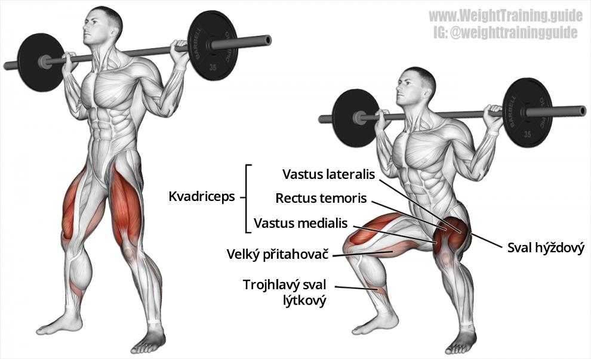
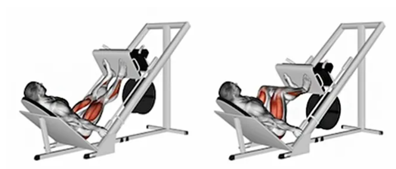
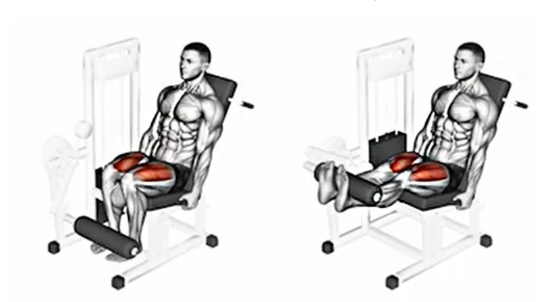
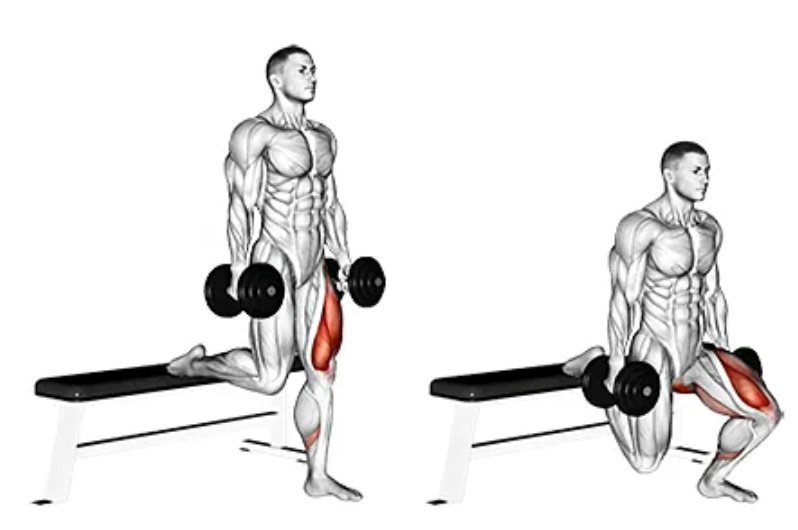
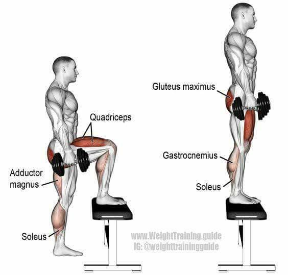

Dřepy
Výchozí poloha: Stoj mírně rozkročný. Činka pevně držena na horní straně trapézů.
Provedení: S hlubokým nádechem jdeme pomalu do dolní polohy (dřep) s výdechem a kontrakcí svalů přední strany stehen zpět do stoje.
Tlaky na leg pressu
Výchozí poloha: V sedě na lavici pro tlaky nohama, nohy zapřeny na šířku pánve o desku leg pressu.
Provedení: Vytlačíme desku do mírně pokrčených nohou. S nádechem pomalu spouštíme desku dolů do pokrčených nohou (aby holenní kosti se stehny svíraly úhel alespoň 90 °). S výdechem vytlačujeme desku stroje vzhůru do napnutých nohou. Tlačíme rovnoměrně celým chodidlem proti desce. Při postavení nohou vysoko na platformě dochází k většímu zapojení zadní strany stehen a hýžďových svalů, naopak při postavení níže (při pohybu dolů koleno putuje lehce vpřed) docílíme většího zapojení předních stehen.
Předkopávání
Výchozí poloha: V sedě na přístroji pro předkopávání, bérce spočívají za pohyblivým válcem stroje. Nohy pokrčeny.
Provedení: Kontrakcí přední strany stehen zvedáme nohy do natažení, pohyb vychází z kolenního kloubu. S nádechem vracíme zpět do výchozí polohy.
Bulharské dřepy
Výchozí poloha: ve stoji na jedné noze, druhá noha je opřená o lavičku v oblasti nártu, činky držíme podél těla, pohled směřuje vpřed.
Provedení: Pokrčením nohy jdeme s nádechem dolů. Špička může a nemusí (viz výpady výše) přesahovat koleno, ideální hloubka je cca do pravého úhlu mezi stehnem a holenní kostí. Kontrakcí gluteálních a stehenních svalů se dostáváme do vzpřímené polohy – výdech a po odjetí série měníme pracující končetinu.
Výstupy na lavičku
Výchozí poloha: ve stoji mírně rozkročeném, činky držíme podél těla, pohled směřuje vpřed.
Provedení: Položením nohy na lavičku a následným výstupem s kontrakcí gluteálních svalů a stehenních svalů jdeme s nádechem dolů. Špička (viz předchozí cviky), ideálně držíme pravý úhel. Výstupem se dostáváme do vzpřímené polohy a s výdechem jdeme druhou nohou krok zpět na zem a celý cyklus opakujeme. Po odjetí série měníme pracující končetinu.
.